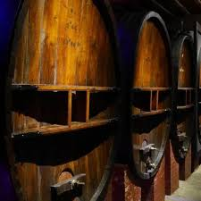

Blanquette de
Limoux AOP


⟹ Vins & Appellations ⟸
Une histoire viticole qui plonge dans l’Antiquité. La haute vallée de l’Aude possède une tradition viticole très ancienne, favorisée par sa position de carrefour entre Méditerranée, piémont pyrénéen et influences venues de l’Atlantique. Bien avant l’apparition des vins effervescents, on y cultivait déjà la vigne et l’on y élaborait des vins blancs. Au Moyen Âge, les établissements religieux jouent un rôle majeur dans la conservation et le perfectionnement des pratiques viticoles.
Le Mauzac, ou « blanquette », est au cœur de cette identité. Le nom de « blanquette » est lié au Mauzac, cépage historique du Limouxin dont le revers des feuilles est couvert d’un duvet blanchâtre. Une mention ancienne d’une vigne de « blanqueta », retrouvée dans un document de la fin du XVe siècle, montre que le terme était déjà employé dans le pays de Limoux avant même les célèbres témoignages relatifs au vin mousseux.
1531, date emblématique. La tradition historique situe à l’abbaye bénédictine de Saint-Hilaire, près de Limoux, l’un des plus anciens témoignages connus d’élaboration d’un vin effervescent. Des écrits de 1531 mentionnent le travail des moines sur un vin mousseux. Dans les caves fraîches de l’abbaye, les fermentations pouvaient s’interrompre avec le froid hivernal puis reprendre au retour de températures plus douces, notamment lorsque le vin avait déjà été enfermé dans son récipient. Cette reprise de fermentation produit naturellement du gaz carbonique et donc l’effervescence.

Une technique longtemps empirique. Il faut toutefois distinguer la découverte d’une effervescence spontanée de la maîtrise moderne de la prise de mousse. Pendant des siècles, la fermentation reste difficile à contrôler : la qualité des bouteilles, des bouchons et la compréhension des levures ne permettent pas encore la régularité actuelle. La « méthode ancestrale » conserve la mémoire de cette pratique ancienne : la première fermentation est interrompue puis s’achève en bouteille, sans rechercher le même procédé que la seconde fermentation provoquée de la méthode traditionnelle.
La Blanquette devient un vin de prestige. Des documents des XVIe et XVIIe siècles témoignent de la réputation croissante des vins de Limoux. Aux XVIIIe et XIXe siècles, leur diffusion dépasse progressivement le cadre régional. La Blanquette apparaît sur des tables aisées et gagne les grands centres de consommation. Thomas Jefferson, troisième président des États-Unis et connaisseur des vins français, en acheta au début du XIXe siècle, signe de la circulation internationale déjà acquise par le nom de Limoux.
Le XIXe siècle transforme profondément le vignoble. Comme l’ensemble du Midi, le Limouxin connaît l’expansion viticole liée aux nouveaux moyens de transport, puis les crises de l’oïdium, du mildiou et surtout du phylloxéra. La reconstitution du vignoble sur porte-greffes américains oblige les vignerons à renouveler une grande partie de leurs plantations. Dans le même temps, l’amélioration de la verrerie, du bouchage et des connaissances œnologiques rend la production des vins mousseux beaucoup plus sûre et régulière.
Une protection précoce de l’origine. Face aux imitations et aux crises du marché viticole, les producteurs s’organisent pour défendre le nom de Limoux. L’aire de production est délimitée dans l’entre-deux-guerres et les vins effervescents de Limoux obtiennent l’appellation d’origine contrôlée en 1938, parmi les reconnaissances historiques de la viticulture française. L’aire actuelle couvre 41 communes de la haute vallée de l’Aude.
Deux traditions d’effervescence. La Blanquette de Limoux est aujourd’hui élaborée avec une seconde fermentation en bouteille et reste intimement liée au Mauzac, tandis que la Blanquette « méthode ancestrale » perpétue une fermentation achevée naturellement en bouteille. Le Crémant de Limoux, reconnu plus tard, complète cette famille d’effervescents. Cette coexistence de plusieurs méthodes illustre la capacité du vignoble à préserver son héritage tout en faisant évoluer ses pratiques.
Un vin indissociable de la culture limouxine. La Blanquette accompagne depuis longtemps les fêtes, les repas et surtout le célèbre Carnaval de Limoux. Elle n’est donc pas seulement un produit viticole : elle appartient au patrimoine social et festif de la haute vallée de l’Aude. Entre l’abbaye de Saint-Hilaire, le Mauzac, les caves de Limoux et les traditions carnavalesques, son histoire relie patrimoine religieux, savoir-faire paysan, progrès œnologiques et identité locale sur près de cinq siècles.
Le Mauzac, cépage local aux arômes de pomme verte, doit son nom aux fines poussières blanches qui recouvrent le revers de ses feuilles en fin d'été. Il est très majoritaire dans la Blanquette et la Méthode Ancestrale, tandis que le Chardonnay et le Chenin blanc n'interviennent qu'en appoint. Les sols argilo-calcaires des coteaux limouxins, associés à un climat frais d'altitude, préservent l'acidité nécessaire à la prise de mousse.
Un vin effervescent né du hasard d'une cave et de la patience d'une méthode restée quasiment inchangée depuis cinq siècles.
Tradition orale du LimouxinLa Blanquette se déguste avant tout à Limoux même, capitale de l'appellation, où de nombreuses maisons et domaines ouvrent leurs caves à la visite et à la dégustation.
Caveaux et maisons du Limouxin proposant visites de chais et dégustations autour de la méthode traditionnelle et de la méthode ancestrale.
Abbaye de Saint-Hilaire, berceau historique de la découverte de 1531, aujourd'hui ouverte à la visite.
Carnaval de Limoux, l'un des plus longs du monde, où la Blanquette coule traditionnellement à flots pendant près de trois mois.